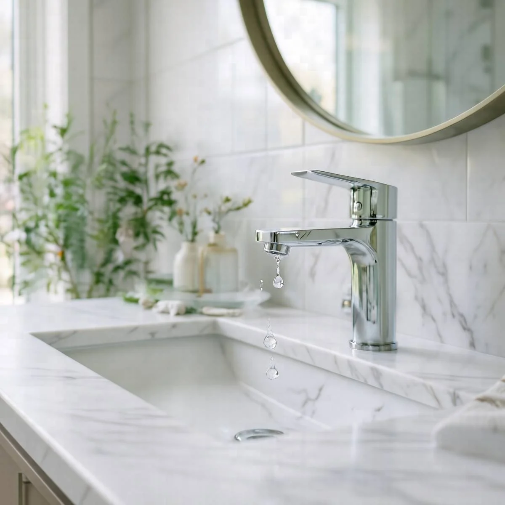

Featured
Repair Tips
7 Signs You Need Professional Faucet Repair in Hayward, CA
Identifying faucet issues early can save you money and hassle. Here are seven signs you need professional faucet repair in Hayward, CA.
October 2023
·8 MIN READ
Read article